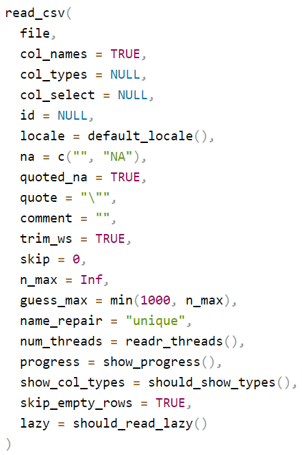

6 R Packages and Libraries
6.1 Understanding R Packages and Libraries
When working with R, you’ll often hear about “packages” and “libraries.” It’s important to understand what these are and how they are used in the R programming environment.
6.1.1 What Are R Packages?
Think of a package as a toolbox that contains a set of tools (functions), materials (data sets), and an instruction manual (documentation). Just as you might have different toolboxes for different types of work (like electrical work or carpentry), in R, you have different packages for different types of tasks, like creating graphs, analyzing statistical data, or manipulating text.
Packages in R are created by the community: people like you and me who need a set of functions and decide to bundle them together for everyone to use. Once a package is created, it can be shared with others.
6.1.2 What Are R Libraries?
Now, if packages are like toolboxes, then libraries are like the shelves where you store these toolboxes. In R, a library is a directory on your computer where packages are stored. When you install a package, it’s like putting a toolbox on one of these shelves. And when you want to use a package, you have to take it off the shelf and open it, which in R, you do by “loading” the package.
6.1.3 Where Are Libraries Stored?
On your computer, the R libraries are stored in a place that R knows and can access when you ask it to. This is usually a folder named “R” in your system’s library folder or in a location that you specify. You don’t usually have to worry about where this is unless you’re managing multiple versions of R or you have special security settings on your computer.
If you want to check where the libraries are installed on computer run this command in your console .libPaths()
6.2 Installing, Loading, and Managing R Packages
6.2.1 What Are the Sources of R Packages?
Packages can come from several places:
CRAN (Comprehensive R Archive Network): This is the main repository where R packages are stored. Think of it as the official app store for R. When you use install.packages(), you’re usually downloading from CRAN.
Bioconductor: This is a repository that’s focused on bioinformatics packages.
GitHub: Some developers choose to put their packages on GitHub, a platform for developers to share code. These aren’t always officially released on CRAN, but you can still install them using tools like devtools. This requires first install devtools from
CRAN website, load its libraries before using it install packages from GithubLocal Files: Sometimes, you might have a package file (with a .tar.gz extension for Mac/Linux or .zip for Windows) on your computer that you can install directly.
Summary
- A package is a collection of functions, data, and documentation that extends R’s capabilities.
- A library is a place on your computer where R packages are stored.
- You can get packages from places like CRAN, Bioconductor, GitHub, or even local files on your computer.
- Once you get the hold of installing and loading packages, you’ll have access to a vast world of tools that can help you do almost anything you can imagine with R.
6.2.2 Section: Installing and Loading R Packages
In this section, we’ll cover the essential skills of installing and loading packages in R, a crucial step in leveraging the vast array of tools available for data analysis in R. R packages are collections of functions, data, and compiled code that extend the basic functionality of R.
By the end of this section, students will be able to: 1. Install R packages from CRAN and other repositories. 2. Load packages into an R session. 3. Troubleshoot common issues related to package installation.
6.2.3 Installing R Packages from CRAN
Accessing CRAN - CRAN (Comprehensive R Archive Network) is the main repository for R packages. - To install a package from CRAN, use the install.packages() function in R.
Example Command - For example, to install the package ggplot2, you would use the command: install.packages("ggplot2").
Internet Connection - Ensure you have an active internet connection, as R will need to download the package files.
Dependencies - When installing a package, R automatically installs any other packages (dependencies) that are required.
If you use the command install.packages("ggdag package"), to install a package of your choice ggdag as an example, and you get the following error message.
Warning in install.packages : package ‘ggdag package’ is not available for this version of R
A version of this package for your version of R might be available elsewhere, see the ideas at https://cran.r-project.org/doc/manuals/r-patched/R-admin.html#Installing-packages
You will get this error message because the package is not available on CRAN repositiory. Search it on web and see where this package is available and then try the below two methods You can try installing it from GitHub using the devtools package or from Bioconductor.
6.2.4 Installing Packages from GitHub
*Using DevTools - The devtools package in R is designed to facilitate package development and installation from sources like GitHub. - First, install devtools from CRAN using install.packages("devtools"). - Then load the package using library(devtools).
Install from GitHub - With devtools installed, and loaded you can use the install_github() function to install packages directly from GitHub. - The syntax is devtools::install_github("username/repository"), where username is the GitHub username and repository is the name of the repository.
Example Command - For instance, if you want to install a package named leaflet from a GitHub user rstudio``, use:devtools::install_github(“rstudio/leaflet”)`.
Note on Private Repositories - For private repositories, you may need to configure additional authentication settings.
6.2.5 Installing Packages from Bioconductor
Bioconductor for Bioinformatics - Bioconductor is a project providing tools for the analysis and comprehension of high-throughput genomic data in R. - It has its own set of packages, particularly focused on bioinformatics.
Install Bioconductor Packages - To install packages from Bioconductor, first install the BiocManager package from CRAN using install.packages("BiocManager"). - Then, use BiocManager::install() to install packages from Bioconductor.
Example Command - For example, to install the GenomicFeatures package from Bioconductor, use: BiocManager::install("GenomicFeatures").
Bioconductor Versioning - Bioconductor releases are semi-annual and tied to specific versions of R. Ensure that your version of R is compatible with the version of Bioconductor you are using.
6.2.6 Loading Packages into R Session
Using library() - Once a package is installed, load it into your R session using the library() function. - For example, to load ggplot2, use: library(ggplot2).
Checking Installed Packages - Use installed.packages() to get a list of all packages installed in your R environment.
6.2.7 Troubleshooting Package Installation
Error Messages - Pay close attention to any error messages during installation; they often provide clues about the issue.
Dependency Issues - If there are missing dependencies, try installing those packages separately.
Compatibility with R Version - Some packages may not be compatible with your current version of R. Check the package documentation for version requirements.
Internet Connection and Firewalls - Ensure a stable internet connection. Firewalls or network policies may sometimes block R from accessing external servers.
Additional Resources - Type the following commands into your R console and hit enter. This will open an R documentation window in the Files pane, specifically in the Help Tab. This window provides detailed information about these commands. At this stage, it’s not necessary to delve deeply into understanding every aspect of these commands. However, this method is a valuable tool for learning more about packages and functions in R as you progress. - For R documentation, use: ?install.packages and ?library
6.3 Exercise 7
This exercise is designed to familiarize you with the process of installing and loading R packages, and exploring their functions. You’ll get hands-on experience with some of the basic data analysis packages in R.
- Install Package:
- Install the following popular R packages for data analysis:
ggplot2for data visualization.readrfor reading rectangular data.
- Install your chosen package using the command
install.packages("packageName"), replacing"packageName"with the name of the package. - We will use these two packages in next two sections
- Install the following popular R packages for data analysis:
- Load the Package:
- Load the package into your R session using
library(packageName).
- Load the package into your R session using
- Explore Package Functions:
- Using RStudio’s Help Tab:
In RStudio, locate the Help tab, which is typically found in the lower right panel in the File pane. Type the name of the package or a specific function from the package in the search bar. Press enter, and a new page will open, displaying detailed information about the package or function.
- Install
Install one by one
install.packages("ggplot2")
install.packages("readr")
OR install in one go
install.packages("ggplot2", "readr")
When you run the above codes you will see the following text (or something similar) in your console It may take sometime if it is also installing the dependencies (other packages required for ggplot2)
trying URL 'https://cran.rstudio.com/bin/windows/contrib/3.6/ggplot2_3.2.1.zip Content type 'application/zip' length 3976166 bytes (3.8 MB) downloaded 3.8 MB
package ‘ggplot2’ successfully unpacked and MD5 sums checked
The downloaded binary packages are in C:\Users\...\your\directory
If you see this message it means that the package is installed successfully. Do not be afraid of the text in red color that mostly symbolize the Error or Warning message.
- Load the packages
Use the library() function to load the packages ggplot2 and readr as shown below
library(ggplot2)
library(readr)
When you run these commands, they should execute without any errors or warning messages, and typically, you won’t see any output in the console. If the packages are loaded successfully, R proceeds silently, indicating that everything is functioning correctly.
- Explore
Using RStudio’s Help Tab
- Locating the Help Tab:
- In RStudio, find the Help tab in the lower right panel, typically under the File pane.
- Searching for Package or Function Documentation:
In the search bar, type
ggplot2and press enter. A new documentation page opens, showing detailed information about theggplot2package. It has its own webpage and GitHub page please click on linkhttps://ggplot2.tidyverse.orgto explore more about ggplot usage.In the search bar, type
ggplot, which is a function in theggplot2, package and press enter. A new documentation page opens with Description, Usage, Arguments, Details and Exxamples on information page.In the search bar, type
readrand press enter. You will see again a page open up with links to web pages. You can click onhttps://readr.tidyverse.orgto get more information on the readr package.In the search bar, type
read_csvand press enter. You will see again a page open up with information allreadfunction available in thereadrpackage.
Navigate down and find the read_csv function and read the arguments it can take.

Here read_csv() is function that performs a specific task. Everything inside the read_csv() within the small closed brackets, separated by comma is an argument. For example col_names is an argument and it can take logical values either TRUE or FALSE. If you do not specify the argument, it will take the default value. For example, if you do not specify the argument col_names it will take the default value FALSE and will not read the first row of the data as column names.
Summary
- Through the Help tab, you can access a wealth of information about R packages and their functions.
- This process helps in understanding how specific functions work, including their required inputs (arguments) and what they return.
- By exploring these resources, you gain insights into how to effectively use these packages in your R programming tasks.